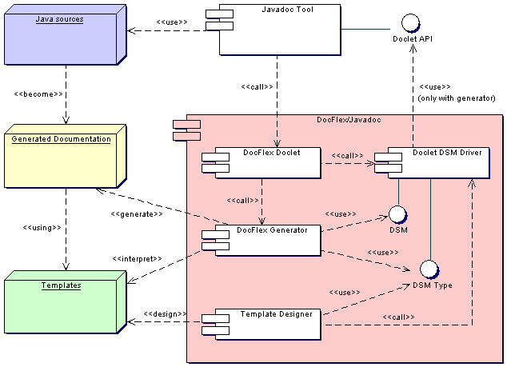
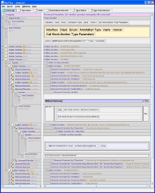
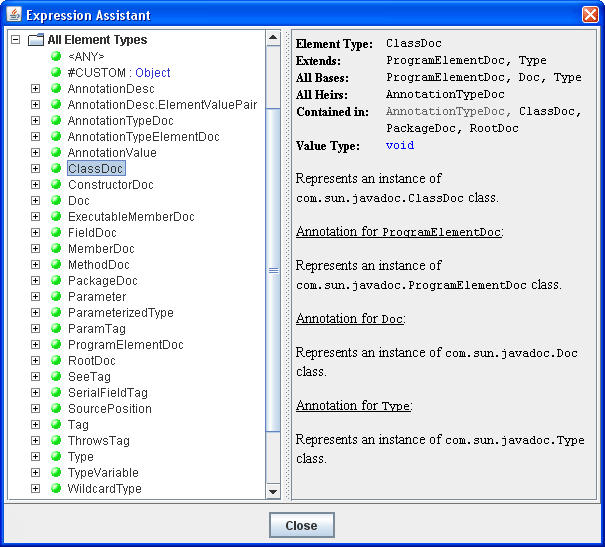
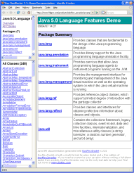
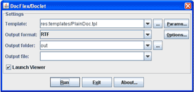
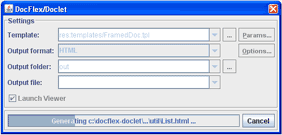

About DocFlex/Javadoc
- Overview
- Editions
- How it works
1. Overview
DocFlex/Javadoc is both a multi-format
Javadoc Doclet
and a rapid doclet development tool,
which allows easy creation of professional quality Java API documentation
generated by
Javadoc in various output formats.
Key Features
- Template-driven doclet architecture
-
The actual doclets are created in the form of special
templates interpreted by the
DocFlex Doclet, which is
the template interpreter / output generator wrapped in the form of a
Javadoc Doclet.
-
The high quality graphic Template Designer
will allow you to visually design most of things, whose development was possible so far only
by direct Java coding.
-
The templates are designed independently on a particular output format.
All formatting is specified in some universal way using properties of template components.
During the generation, it is rendered with the suitable features available in the selected output format.
-
The elaborated support of template parameters
(including multivalued list parameters).
The parameters are defined and accessed within templates to adjust dynamic properties of template components.
Most of options previously used to control an ordinary doclet now simply become template parameters!
-
The possibility to call templates from one another.
This feature (along with the template parameters) makes possible re-using the same templates
for different tasks as well as organizing template libraries.
- Data processing
-
The entire Doclet API
is represented in the form of a virtual XML document (called Doclet DSM),
on which the designing and processing of all templates is based.
-
Sophisticated capabilities for data querying and sorting
based on an extension of XPath.
-
Full support of new Java 5.0 language features:
Generic Types, Enums, Annotations.
-
Simultaneous support of Java 1.4 and Java 5 (see below).
- Creating hyperlinks
-
Generation of an extensive network of hyperlinks interconnecting the whole documentation.
-
The hyperlinks can be generated in all output formats that support them (this currently includes HTML and RTF).
-
The universal way of defining documentation cross-links based on the link/target keys
specified in templates.
-
In RTF, the cross-links can be generated in the form of page number references,
which effectively makes them usable even in the printed documentation.
-
In HTML, the possibility of loading several frame windows from a single hyperlink at once.
- Universal support of various formatting techniques
- text formatting: fonts, colors, borders
- paragraph formatting: margins, pagination control, borders, colors
- border formatting: styles (solid, double, dashed, dotted), thickness, colors
- tables: arbitrary cell layouts, borders, nested tables
- lists: bulleted, numbered, delimited
- document fields (RTF): page number, number of pages, TOC, etc.
- page formatting: size, orientation, margins, headers/footers
- formatting styles
-
rendering of embedded HTML, which means interpreting in non-HTML output formats (such as RTF)
the HTML tags embedded in text data (e.g. documentation comments). Almost all HTML tags practically
usable in doc-comments are supported.
- Inserting images
- statically specified in templates
- dynamically, obtained by
<img> tags found in Java comments
- supported image formats: GIF, PNG, JPG, WMF, EMF, BMP
- Output formats
-
HTML (both framed multi-file and single-file output)
-
RTF (version 1.6 - supported since Word 2000).
-
TXT (plain text), which may be particularly useful for various utilizations
of the Java code information provided by the
Doclet API
(for instance, to generate XML files by it,
or SQL files to import into a database).
- Standard Template Set
-
The ready-to-use Standard Template Set
included in all editions of DocFlex/Javadoc will allow you
to immediately generate:
-
The framed HTML
Java API documentation similar to that generated by the
standard Javadoc.
-
The same documentation packed in a single HTML file.
-
The unmatched quality RTF JavaDoc.
-
Special features supported by standard templates:
-
Excluding classes/methods/fields by custom tags and annotations.
-
Selective omitting of package qualifiers.
-
Selective documenting of custom tags (similar to
-tag
option of Standard Doclet).
-
By modifying the standard templates,
you can quickly customize the generated documentation according to your needs.
- Doclet GUI
-
Besides command line options,
DocFlex Doclet supports an alternative user-friendly way
to control the template-based doclets interactively -- the high quality Doclet GUI.
-
The Doclet GUI starts with the
Generator Dialog,
where you can specify all general settings (such as the main template, the output format and
the output directory), start the generation, track its progress and stop at any moment you need.
-
The grid-tree-based
Parameter Inspector
invoked from the Generator Dialog
for a selected template allows you to view the descriptions of all template parameters controlling
the doclet and set their values according to the parameter data types.
-
The generator options specific for the selected output format can be set in the
corresponding
Format Option Inspector
(also invoked from the Generator Dialog).
-
Once the generation is finished (or cancelled), you can start it again
with different settings or a new main template without restarting the whole Javadoc.
- Integrations
System Requirements
DocFlex/Javadoc requires the Javadoc Tool delivered with one of the following
Java Development Kits:
(JDK 6 may be preferable as it works considerably faster.)
Since DocFlex/Javadoc is a pure Java application
(the Template Designer GUI is based entirely on
Swing),
it is supposed to work on any operating system with the installed JDK.
Specifically, the software available for downloads
includes both MS Windows BAT files and Linux shell script files
to run DocFlex/Javadoc immediately on those operating systems.
(We have been also reported that DocFlex/Javadoc was successfully working under Mac OS X).
Additionally, a sample Ant buildfile and Maven POM file are provided to demonstrate
integration of DocFlex Doclet both with Apache Ant and Maven
(see also Documentation | Integrations).
Simultaneous Support of Java 1.4 and Java 5
As you perhaps know, since JDK 5.0, the
Doclet API
has been extended to reflect the new language features introduced in Java 5.
Because of this, a doclet developed for Java 5 won't work under Java 1.4
(otherwise is possible, of course).
However, as we found (after the preliminary v1.5 beta release), Java 1.4 appears to be still well in use.
So, we have finally decided in DocFlex/Javadoc v1.5.x to support both Java versions (i.e. the new
Doclet API 1.5
and the old
Doclet API 1.4).
Since the binaries compiled for Java 5 are not compatible with Java 1.4, now, DocFlex/Javadoc v1.5.x
(both editions) includes two Java libraries: the one compiled for Java 5+ and another one
compiled for Java 1.4.
The Doclet DSM, on which any DocFlex/Javadoc
templates are based, is always the same.
That is, the Java 5 functionality (i.e. the mapping of entire
Doclet API 1.5
on a virtual XML document model) is present in both libraries.
However, in the version compiled for Java 1.4, everything concerned Java 5 is emulated
by the Doclet DSM Driver itself.
It happened to be very simple to implement. So, we've done this!
As a result, any templates
designed for either Java version will work fine under both Java 5+ and Java 1.4 as well.
The templates simply won't "notice" the difference!
XML Generation
Since XML files are just text files, you can easily generate any sorts of XML output
from the data provided by
Doclet API
using DocFlex/Javadoc.
To generated XML, all you need is to design a template where the output produced by
Data Controls
(from the data obtained from Doclet API) is interchanged with the static text representing certain XML tags,
which can be produced, for instance, by
Label Controls.
Then, you can simply generate a TXT output with such a template, and this will be XML.
Since generating XML is a very general topic (first, you need to choose what a specification that
XML should follow), we have not found yet any particular application where an XML generated with Javadoc
would be of mass interest (except XSL-FO, which is a special case). Therefore, we do not provide any
templates specifically designed to generated XML.
However, if you could suggest such an application, just let us know by sending a e-mail to:
support@docflex.com.
If your idea fits a certain known XML standard, we could quickly design templates
for that application and supplement with them the provided
standard templates
as well as the freeware edition -- DocFlex/Doclet.
2. Editions
DocFlex/Javadoc comes in two editions:
- DocFlex/Javadoc - Full Edition
- DocFlex/Doclet - Reduced Free Edition
Full Edition
The full edition, called “DocFlex/Javadoc” as is,
provides all functionality currently implemented about DocFlex/Javadoc.
This includes:
-
The graphic Template Designer,
which will allow you to visually design your own sophisticated Java API documentation generators
implemented in the form of template applications
as well as to modify any existing ones.
-
The DocFlex Doclet, which is the DocFlex
template interpreter / output generator wrapped in the form of a
Javadoc Doclet
(the plug-in to the standard Javadoc).
Using it you can execute any DocFlex/Javadoc template application and generated the high quality output documentation
in framed multi-file HTML, single-file HTML and RTF output formats (as well as plain text files,
which you can use to transform your Java project data into other representations).
-
The Standard Template Set
that will allow you to immediately generate both framed/single-file HTML and printable RTF Java API documentation
looking similar to that generated by the
standard Javadoc.
By modifying the standard templates, you will be able also to quickly customize the generated documentation according
to your needs.
The software included in the full edition may work in three modes:
limited,
full and
trial.
The Limited Mode is covered by the
Limited Free License.
It is activated by default when no other licenses have been found. This mode allows you:
-
To run the Template Designer in demo mode.
You will be able to investigate any functionality, however, unable to save any your
created/modified templates.
-
To run the standard templates without limitations.
The Full Mode is activated in the presence of a
Commercial or
Academic License
for the full edition of DocFlex/Javadoc.
This mode allows you:
The Trial Mode is activated in the presence of a
Trial License
for the full edition of DocFlex/Javadoc.
In this mode, the software will work the same as in the full mode
except the following limitations:
-
You may use DocFlex/Javadoc working in trial mode
only during the limited period of time (30 days) provided by your
Trial License.
-
Any output documents generated in trial mode will contain special
trial markers.
Such documents may be used only for evaluation of this software.
Any other usage is prohibited!
-
Any templates created or modified (the last time) in trial mode will not work with
DocFlex/Doclet.
However, you may continue to use or modify such templates once you have installed a
Commercial or
Academic License
for the full edition.
DocFlex/Doclet
This is a reduced free edition of DocFlex/Javadoc
without the Template Designer.
It includes:
-
The DocFlex Doclet, the DocFlex
template interpreter / output generator represented as a
Javadoc Doclet.
This is the same as in the full edition.
-
The Standard Template Set
build as resources in the executable Java archive:
docflex-doclet.jar.
The standard templates will allow you to immediately generate both
framed multi-file and
single-file HTML
JavaDoc (looking similar to the standard one) as well as the unmatched quality
printable RTF documentation
with reproducing in the RTF output almost all formatting specified with HTML tags in Java comments
(including insertion of images in various formats).
DocFlex/Doclet works only in the Free Mode covered by the
Free License.
It allows you:
3. How it works
Here is a UML
implementation diagram, which depicts the functional structure of DocFlex/Javadoc:

Main Components
The DocFlex/Javadoc implementation consists of four main components:
-
The Doclet DSM Driver, which represents a bridge between Javadoc
Doclet API
and DocFlex core. The driver connects to Javadoc
using Doclet API and supplies data via DSM (Data Source Model) interface that is
a representation of Javadoc data source in the form understandable for DocFlex core. This representation is
called Doclet DSM. The driver also supports
DSM Type interface which provides the data structure and type information about
this data source. The DSM interface is used by DocFlex Generator to obtain data it operates. The DSM Type
interface is used both by the generator to know how to handle those data, and by the
Template Designer to provide the data type information during
designing of the templates.
-
The DocFlex Doclet component provides
com.docflex.javadoc.Doclet
class,
which is the one to be specified with the -doclet option on
the Javadoc command line. The DocFlex Doclet component processes the command line options received
from the Javadoc, initiates the Doclet DSM Driver and starts the generator.
It also may invoke the Doclet GUI, which provides a user-friendly interface
to specify most of parameters and settings used by the generator.
See Documentation page for more
details about running DocFlex Doclet.
-
The DocFlex Generator, which is launched by DocFlex Doclet and receives from it:
- The Doclet DSM Driver ready to supply data from Javadoc
- The template to be interpreted
- The template parameters and other settings
The generator executes the template and generates the output documentation.
-
The Template Designer, which provides a GUI for designing the templates.
It also starts Doclet DSM Driver (however, without connection to Javadoc) and uses information provided
by DSM Type interface. In the next section, we shall discuss what that information is.

Doclet DSM
When Javadoc
is started, first, it collects the information about the Java sources to be documented.
Javadoc does this by parsing all the Java classes
(most likely, it just calls from itself the Java compiler that does that parsing job).
Once the collecting of the information is finished, Javadoc calls a doclet (by default, the
Standard Doclet)
and passes to it all the Java source information organized in the form of a tree-like representation,
which is provided to the doclet via the
Doclet API.
One may notice, however, that the structure of that representation is very much similar to that described by
DOM (the Document Object Model of an XML file).
All data provided by Doclet API can be represented either as some XML elements or as their attributes.
DocFlex/Javadoc makes use of this. It maps all the
Doclet API
classes (such as
com.sun.javadoc.ClassDoc)
to the equally named elements and the values returned by the methods of those classes
-- to the element's children and attributes (see below).
As a result, the entire Doclet API is mapped on some XML-like representation called
Doclet Data Source Model (or Doclet DSM).
The elements and attributes, on which everything is mapped, are called DSM elements and DSM attributes.
Actually, that XML-like representation is not created in memory.
Rather, it is maintained dynamically by the Doclet DSM Driver.
When a particular element or attribute is needed, the driver just calls the corresponding method
of a Doclet API class.
The methods of
Doclet API
classes (or more precisely, the data they return) are mapped according to the following rules:
-
If a method returns one or more objects whose type has an aggregation relationship with the given class
(i.e. the returned objects are part of an object of this class) and, in addition, the method returns all
aggregated objects of such type, then the returned objects are interpreted as children of the DSM element
associated with the given class.
For example, class
com.sun.javadoc.ClassDoc
has a method methods(), which returns an array of
com.sun.javadoc.FieldDoc
objects representing all fields of a Java class being documented. Those two classes and method
are mapped as the following:
- Class
com.sun.javadoc.ClassDoc is mapped to DSM element ClassDoc
- Class
com.sun.javadoc.FieldDoc is mapped to DSM element FieldDoc
-
Method
ClassDoc.fields() is mapped into parent/child relationship between ClassDoc
and FieldDoc elements according to the following XML
DTD declaration:
<!ELEMENT ClassDoc (FieldDoc*)>
-
If a method returns object(s) whose type has an association relationship with the given class,
or in the case of aggregation, the returned array represents only a subset of all aggregated objects
of this type, then this method is mapped as an attribute with
IDREF type
(single- or multi-valued depending on the cardinality of the returned objects).
For example, method com.sun.javadoc.ClassDoc.interfaces() returns ClassDoc
objects, which represent all interfaces implemented by a documented Java class. Those interfaces are not
part of this class. They exist independently. So, the relationship between the interfaces and the class
implementing them should be interpreted (in our context) as an association. Therefore, the method
ClassDoc.interfaces() is mapped as an attribute interfaces of the ClassDoc DSM element.
Here is how this is presented in the form of XML DTD declaration:
<!ATTRLIST ClassDoc interfaces IDREFS>
-
If a method returns a primitive type it is mapped as an attribute of the DSM element associated
with the given class. The attribute data type is the same as the one returned by the method.
(Note: DocFlex introduces additional
data types
not presented in XML DTD to handle values of XML elements and attributes suitable for Java-based data sources.)
For example, method com.sun.javadoc.ClassDoc.isAbstract(), which returns a boolean value,
is mapped as isAbstact attribute of the ClassDoc DSM element. Here is how this would
looks in the form of XML DTD declaration (if BOOLEAN data type was allowed in DTD):
<!ATTRLIST ClassDoc isAbstract BOOLEAN>
You can see all mapping of
Doclet API
to XML
used by Doclet DSM, if you look at FlexQuery Assistance Dialog
invoked from the Template Designer (click to enlarge):

In effect, the tree visible on this picture represents all the
Doclet API
in a very simple but equally powerful form.
What are Templates?
The DocFlex/Javadoc templates are actually programs.
The idea behind the template approach is the following.
If you consider how almost any Java library that generates something
(and not only generates -- for instance, powers a GUI system) works,
you will notice that, basically, it may be described as the following:
-
First, we need to create a certain object representation of some controlling structure
(using special classes and methods of that library).
-
Further, we call an interpreter included in that library and pass to it that controlling structure
along with some data source we want to process, e.g. some data file, some interface or whatsoever.
(Actually, such an interpreter may be started just by calling some member method of the root object
representing that controlling structure. For instance, in case of a GUI system, this
may be as simple as
dlg.show()).
-
Finally, the interpreter processes that controlling structure and produces from
the data source some useful output (or shows a GUI).
What the actual programming is all about here, when using such a system, is the first step.
We need to encode the creation of that controlling structure!
(And this may be a piece of work indeed...)
Now, let's imagine that such a controlling structure is serialized to a file
(and, therefore, can be created from it).
What is that file, then? One may call it a “template”!
But if that is a template, why not to create and edit it using some template designer GUI?
That approach has a number of advantages:
-
A designer GUI can visualize everything.
Now, rather than coding abstract method calls, we can visually construct the controlling structure
using the notions of things that we expect to see in the generated output.
-
Since probably every modern document format in its core is based on the same obvious concepts
like flows of text with specified fonts and colors, paragraphs with specified margins, borders and
other properties, tables, bulleted/numbered lists, images and so on, most of such things can
be defined in some universal format-independent way, which can be encoded in the form of template components.
-
Such template components can be visualized in the template designer GUI. This allows easy
manipulation with them (creating/defining, modifying, moving, coping and so on).
Doing the same by calling various Java methods and modifying Java code each time we need
to change something would be a lot more cumbersome!
-
On other hand, the template interpreter will render those template components
with the suitable features of the particular destination output format (such as HTML or RTF).
So, we can be relieved from learning and programming lots of very complicated
(and sometimes poorly documented) things specific to a particular format.
Instead, we can more concentrate on our primary application task.
-
The template designer (to a large degree) ensures that the result controlling structure
(the template) is valid. That is, it won't hang when interpreted and will produce some output anyway.
DocFlex Technology
is exactly an implementation of that idea!
The following screenshot shows the class.tpl
template open in the Template Designer (click to enlarge):
This template is included in the Standard Template Set
and generates the bulk of a Java API documentation.
Standard Template Set
DocFlex/Javadoc includes a ready-to-use template set, which is able to generate an HTML JavaDoc
looking very much similar to that produced by the Standard Javadoc Doclet.
In addition, the same template set can generate unique quality
RTF documentation
(that the standard doclet cannot)!
Another unique feature supported by the standard template set (and not available in the standard Javadoc)
is a possibility to exclude from
the generated documentation the classes, fields and methods marked with special
tags and
annotations.
This gives you incredible flexibility over how you can document your Java project!
Here is an example of the framed HTML documentation generated with the standard template set
(click to see the real HTML):

Everything you see in that documentation has been programmed entirely in the templates!
Currently, the standard template set consists of only 15
template files
(plus one icon), which in total occupy 390 KB.
That is all what was needed to program the entire Java API documentation generator!
In comparison, the recent Java implementation of the Javadoc's standard HTML doclet
(whose Java sources can be found, for instance, at
http://download.java.net/jdk6/
-> jdk-6u2-fcs-src-b05-jrl-22_jun_2007.jar ->
j2se/src/share/classes/com/sun/tools/doclets/) consists of
141 files occupying 979 KB in total.
What's more, unlike the standard doclet's Java sources, all templates provided with
DocFlex/Javadoc are free for any changes and modifications. Using the Template Designer,
you can easily change the look & feel of the generated JavaDoc, insert your company's logotype and so on,
as well as to program eventually whatever you wish
(so much as you are willing to understand how everything works).
Further, you will be free to use your created/modified templates for whatever purpose you need.
For more details about the standard template set please see:
DocFlex/Javadoc | Templates
Doclet GUI
A doclet implemented as
{DocFlex Doclet + template set}
is controlled by lots of settings, which include:
- The main template
- The template parameters
- The output format
- The format-specific options to the output generator
- The output destination (directory/file)
All such settings can be assigned using
options
on the Javadoc command line (most, actually, have their default values).
However, in addition to it, DocFlex Doclet provides a much more user-friendly way
to specify everything.
When no
-nodialog
option has been specified on the command line,
as soon as Javadoc finishes parsing Java sources and calls the doclet to generate the output,
the DocFlex Doclet invokes the following dialog (click to enlarge):

Here, you can fill in all required settings of the DocFlex Doclet:
the template, the output format, the output file/destination.
The additional settings, such as template parameters and the output format options
can be assigned in the special property inspector dialogs invoked by clicking the buttons on the right
(click to enlarge):
The bottom panel in the inspector dialog shows the HTML-preformatted description
of each parameter or format-specific generator option.
When all settings are prepared, you can start the generation by clicking <Run> button.
Then, the generator dialog will transform itself to show the generation progress (click to enlarge):

You can stop the generation at any moment by clicking <Cancel> button.
Once the generation has finished (or cancelled), the generator dialog transforms itself back
into its initial state.
After that, you can change any settings and start the generator again with a new (or modified) template set.
This, in effect, allows changing your doclet on the fly.
At that, you won't need to restart the whole Javadoc.
All the memory representation of your Java project provided via the
Doclet API
will remain the same.
This unique capability makes possible extremely fast designing and modification of your templates.
Just change something in the Template Designer, restart the generator
and you can see how it looks now in the result output!
For more details about the Doclet GUI please see:
DocFlex/Javadoc | Documentation | Doclet GUI
Copyright© 2003-2008 Filigris Works, Leonid Rudy Softwareprodukte. All rights reserved.
To contact us, please visit
www.filigris.com or e-mail to: contact@filigris.com